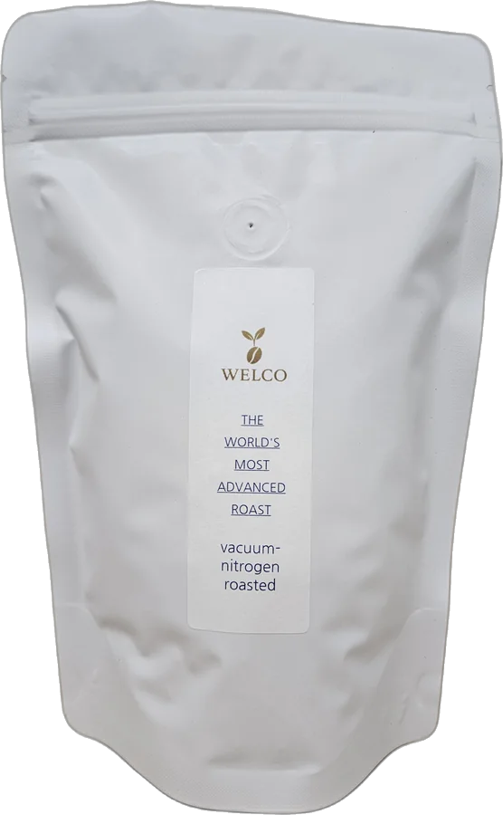
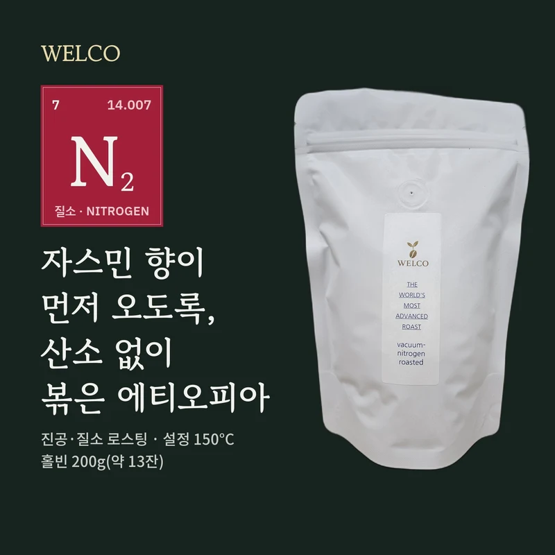

산소를 뺀 질소 속에서 볶아, 그을음이 산지의 향을 가리지 않게 했습니다
경북 고령의 WELCO 로스터리가 볶은 싱글오리진 홀빈 200g입니다. 이유는 세 가지입니다.

낮게 설정한 150°C로 12분, 한 봉은 핸드드립 약 13잔입니다
- 1WELCO 로스팅 공정(제어 화면 설정값). 통상 범위는 특허청 등록특허 제10-2004953호 명세서. 진공 단계와 150°C 설정은 특허가 아닌 자체 공정입니다.
- 2세 원두 모두 같은 로스터에서 같은 순서로 볶습니다.
- 3200 ÷ 15 = 약 13.3. 분쇄 · 추출 방식에 따라 달라집니다.
공기를 먼저 빼고 질소를 채워 볶아, 껍질이 그을리지 않도록 합니다
공기 속에서 볶으면 산소 때문에 불완전 연소가 일어나 원두 껍질이 그을릴 수 있고, 그을음은 커피 향을 가릴 수 있습니다. 그래서 볶는 통의 공기를 먼저 빼고, 질소를 채운 뒤 볶습니다.
12분 공정 중 앞 8분은 공기를 빼고, 뒤 4분은 질소 속에서 볶습니다
한 번 볶는 순서 · 설정 온도 150°C
차이는 볶는 통 안에 산소가 있느냐 없느냐입니다
| 비교 항목 | 공기 속에서 볶을 때 | WELCO · 진공 후 질소 속에서 |
|---|---|---|
| 통 안의 기체 | 공기(산소 포함) | 공기를 뺀 뒤 채운 질소 |
| 산소 | 있음 — 불완전 연소가 일어날 수 있음 | 진공 단계에서 빼냄 |
| 그을음(탄화물) | 껍질이 그을릴 수 있고, 향을 가릴 수 있음 | 생기지 않도록 함1 |
| 설정 온도 | 통상 150~280°C1 | 150°C2 |
세 원두 모두 이 로스터에서 볶습니다

공정 그림과 제어 화면은 원두 상세 · 볶는 방법에 있습니다.
공정이 같으니, 산미 · 균형 · 단맛 중 취향 하나로 고르면 됩니다
세 원두 모두 홀빈 200g, 같은 로스터, 같은 순서, 설정 150°C입니다. 남는 차이는 산지입니다.
산뜻한 블랙은 에티오피아, 균형은 케냐 AA, 단맛과 라떼는 콜롬비아
맛 세기 5단계 · 가장 강한 항목을 짙게 표시

동아프리카 · 시다모 G2 워시드
에티오피아
향미 노트재스민 · 레몬·베리 · 홍차
맛 세기- 산미4
- 단맛3
- 바디2
- 쌉쌀함1
레몬·베리 같은 상큼함, 홍차처럼 가벼운 블랙커피

동아프리카 · 키암부·무랑가 AA 워시드
케냐 AA
향미 노트자몽·포도 · 황설탕·아몬드
맛 세기- 산미3
- 단맛3
- 바디3
- 쌉쌀함1
밝은 산미와 고소한 단맛의 균형을 원하는 분

남아메리카 · 후일라 수프리모 17/18 워시드
콜롬비아
향미 노트시트러스 · 사탕수수 · 밀크 초콜릿
맛 세기- 산미3
- 단맛4
- 바디3
- 쌉쌀함2
단맛이 앞에 오는 한 잔, 라떼까지 생각하는 분
특허는 질소 로스팅에만, 나머지는 자체 공정이라고 나눠 밝힙니다
무엇이 특허이고 무엇이 우리 로스터리의 운영 방식인지 섞지 않습니다. 확인할 수 있는 근거를 범위와 함께 둡니다.
특허 범위는 질소 · 무산소 분위기 로스팅이고, 진공과 150°C는 자체 공정입니다
| 항목 | 내용 | 구분 |
|---|---|---|
| 질소 · 무산소 분위기 로스팅 | 등록특허 제10-2004953호 「곡물 로스팅장치 및 곡물의 로스팅 방법」 · 2019. 7. 23. 등록 · 특허권자 주식회사 디올 | 등록특허 |
| 진공 단계(0~8분) | 질소를 채우기 전에 볶는 통의 공기를 먼저 빼냅니다 | 자체 공정 |
| 설정 온도 150°C | 산지의 꽃 · 과일 향이 열에 가려지지 않게 낮춘 설정 | 자체 공정 |
| 아크릴아마이드 시험 | 케냐 AA 볶은 원두 시료 1건 · 불검출 · 한국인터텍테스팅서비스(주)(식약처 지정 시험기관) 성적서 RT25B-S0676 · 2025. 9. 10. | 시료 시험 |
| 나노버블 발아 | 특허 출원 제10-2025-0112350호 · 개발 중이며 현재 판매 원두에는 적용하지 않았습니다 | 특허 출원 |
| 제조 | 경상북도 고령 · 주식회사 디올(브랜드 WELCO) · 식품제조가공업 등록업소 | 사업자 정보 |

먼저 싹 튼 생두가 상하는 발아 문제를, 나노버블 발아로 풀고자 개발하고 있습니다
생두를 고르게 싹 틔운 뒤 지금과 같은 진공 · 질소 공법으로 볶는 원두입니다. 시험 전이며 출시 일정은 정해지지 않았습니다. 지금 판매하는 세 원두에는 적용하지 않았습니다.
생두 선별 → 나노버블 발아 → 진공 · 질소 로스팅, 세 단계로 만듭니다
개발 중인 공정 · 2단계는 특허 출원, 3단계는 등록특허
- STEP 1생두
싱글오리진 생두를 고릅니다
- STEP 2 · 특허 출원나노버블 발아
아주 작은 기포가 든 물로 생두를 고르게 싹 틔웁니다
- STEP 3 · 등록특허진공 · 질소 로스팅
지금 판매하는 원두와 같은 공법으로 볶습니다
물속 산소가 줄어드는 것을 늦춰, 먼저 싹 튼 생두도 상하지 않게 하는 것이 목표입니다
| 단계 | 일반 침지 발아 | 나노버블 발아 (개발 목표) |
|---|---|---|
| 물속 기포 | 큰 기포는 곧 떠올라 수면에서 터집니다 | 지름 1µm 미만의 기포가 떠오르지 않고 물속에 오래 머뭅니다 |
| 물속 산소 | 생두가 호흡하며 녹아 있던 산소를 써서 점점 줄어듭니다 | 기포 속 기체가 천천히 녹아 산소가 줄어드는 것을 늦춥니다 |
| 먼저 싹 튼 생두 | 산소가 부족해지면 산소 없이 사는 미생물이 늘기 쉬워, 먼저 싹 튼 생두부터 상하기 쉽습니다 | 먼저 싹 튼 생두가 상하지 않고 나머지가 고르게 발아하는 것이 목표입니다 |
취향 하나를 정하고, 그라인더를 확인한 뒤 쿠팡에서 고르세요
- STEP 1취향 정하기
산뜻한 블랙 · 균형 · 단맛과 라떼 중 하나. Exhibit 4에서 비교할 수 있습니다.
- STEP 2그라인더 확인
홀빈(통원두)만 팝니다. 선물이라면 받는 분께 그라인더가 있는지 먼저 확인하세요.
- STEP 3쿠팡에서 구매
가격 · 배송은 쿠팡 판매 페이지에서 확인할 수 있습니다.
사기 전에 확인할 것은 그라인더와 분량입니다
그라인더가 없어요.
홀빈(통원두) 상품이라 분쇄가 필요합니다. 분쇄된 가루는 판매하지 않습니다. 선물하실 때도 받는 분께 그라인더가 있는지 먼저 확인해 주세요.
한 봉으로 몇 잔이 나오나요?
핸드드립 한 잔에 원두 15g이면 200g 한 봉으로 약 13잔입니다. 하루 한 잔이면 약 2주 분량입니다. 원두별 추출법은 원두 상세에 있습니다.
진공도 특허인가요?
아닙니다. 등록특허 제10-2004953호는 질소로 산소를 없앤 분위기에서 볶는 방법입니다. 질소를 채우기 전에 공기를 빼는 진공 단계와 설정 150°C는 WELCO가 정한 자체 공정입니다.
공정 · 특허 · 고르는 법은 일곱 편의 연재에 자세히 썼습니다
카페 사장님이신가요? 원두 샘플 · 납품 문의 — 샘플 신청 메일 쓰기 · 전화 070-7700-7891